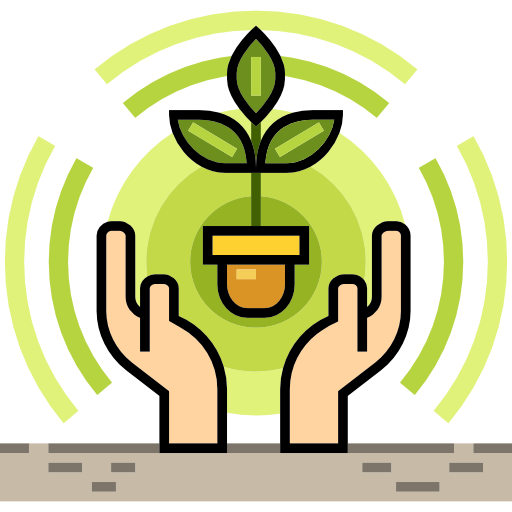

Why Recycle

Conservation of Resources
Recycling helps conserve valuable natural resources such as timber, water, and
minerals by reducing the need for raw materials extraction.
Energy Savings
Recycling requires less energy compared to producing items from raw materials. By recycling materials like paper, glass, plastic, and metal, we can significantly reduce energy consumption and lower greenhouse gas emissions.
 Waste Reduction
Waste Reduction
Recycling reduces the amount of waste sent to landfills or incinerators, which helps
alleviate pressure on waste management systems and reduces pollution.
Protection of Wildlife
Improper disposal of waste can harm wildlife and ecosystems. Recycling helps mitigate
these impacts by reducing pollution and preserving habitats.
 Curbside Recycling Programs
Curbside Recycling Programs
 Specialized Recycling Programs
Specialized Recycling Programs
 Local Government Websites
Local Government Websites
 Industry Associations
Industry Associations